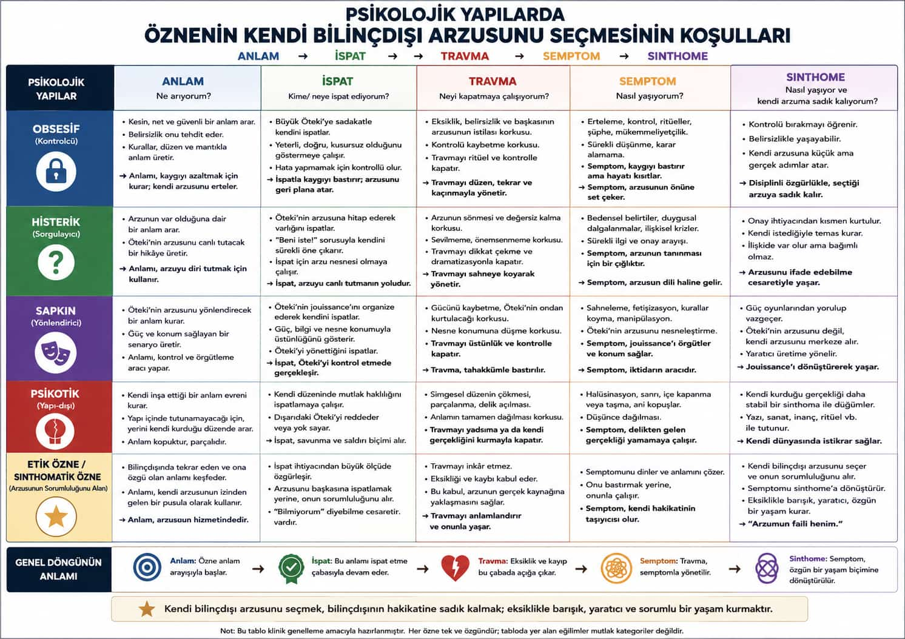
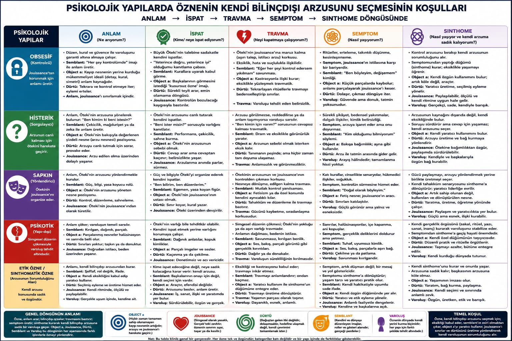

⭐ Sinthomatik özne
⭐ Etik özne
Beşinci bir patoloji değil. Eksikliği kabul et, Öteki'yi garanti olarak kullanmayı bırak, 💫 bilinçdışı arzunun sorumluluğunu al.
Ahlakçılık değil. Arzu etiği: varlığımı dışarıya ihale etmem; eksikliği başkasını sahne ederek örtmem; hayatı mükemmel kurala dondurmam.

